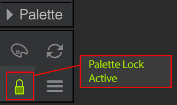
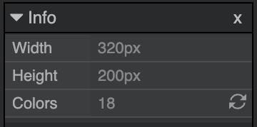
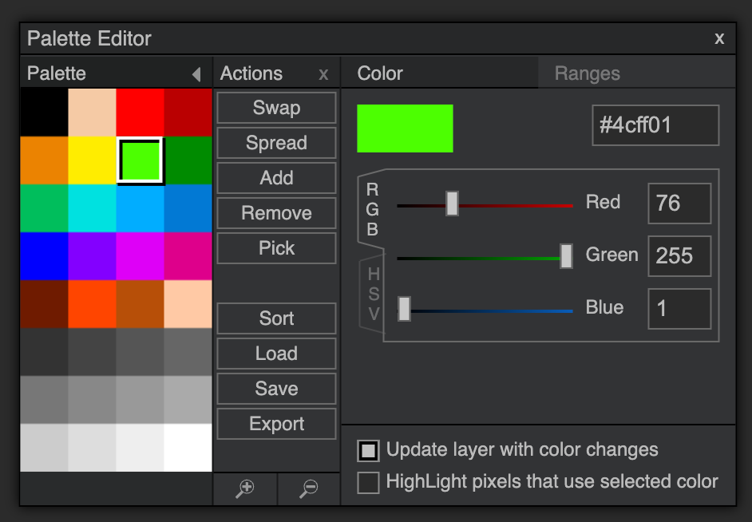
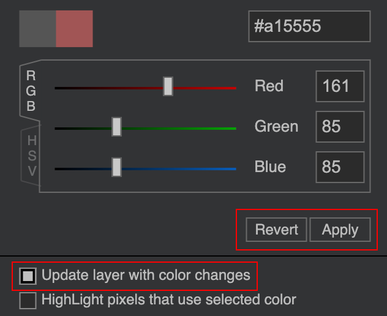
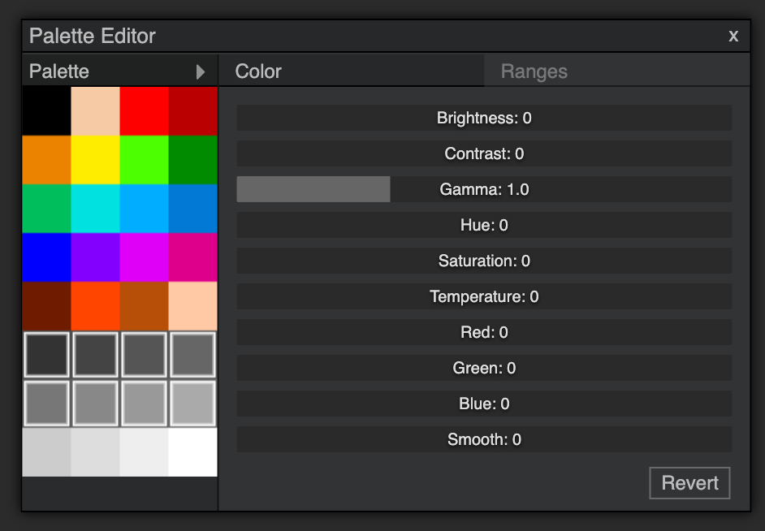

DPaint.js uses a Hybrid Color Engine.
Traditionally, programs are either True Color (like Photoshop, where pixels hold RGBA values) or Indexed Color (like Deluxe Paint, where pixels hold a number pointing to a palette entry).
DPaint.js tries to combine both worlds:
While you paint, you are working with layers, opacity, and blending, exactly like a true color application.
While there is a palette visible and you can pick colors from it, this palette is more of a "color guide" than a strict indexed color mode. It allows you to have a visual reference and pick colors, but it doesn't restrict you to only those colors while painting.
Optionally, when you active the "Palette Lock" mode, your image is still technically in true color, but the engine ensures that every pixel is always mapped to the closest color in your palette. This means that
you can use all the "dirty" tools like smudge, blurs, opacity blending, etc. without worrying about your palette.

If you're aiming for a low color image, you can keep an eye on your color count in the "info" panel (menu: File->Info) and/or use the various "Reduce Colors" tools to optimize your palette.

The Palette Editor allows you to manage your colors. You can add, remove, or edit colors in your palette.
Click on a color slot to edit its color. You can enter a hex code or use the various sliders to adjust the color, both in RGB and HSV mode.

When you change a color in the palette. Hit the "apply" button to update the palette with this new color.
If you also want to update all the pixels that use this color, make sure to check the "Update Layer with color changes" checkbox before hitting "Apply".
Please note that this will only update the active layer not the entire image if you have multiple layers.

You can edit multiple colors at once in the Palette Editor.
When multiple colors are selected, a Batch Edit panel appears, replacing the single color editor.
Here you can adjust properties like Hue, Saturation, Brightness, or Contrast for all selected colors simultaneously.
Please note that batch editing applies the new colors to the active layer automatically. (and it will avoid creating identical colors)
